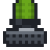

Reference: pages
Reference
Green Alarm Strobe

encodedlogistics:siren_green · Block · Stacks to 64 · Creative tab: Encoded Logistics
Green Alarm Strobe: a warning light and siren that mounts on any face. It flashes in one of several patterns and sounds one of six tones (or none), set off by redstone, by its network with STRSRN, or both. Sirens with the same tone on a network sound together.
Works with
On a network
It counts as a device of type SRN in Work with Devices and in ELCL; the first one on a network is named SRN01. See Device types.
How to get it
Used to make
Nothing.
As a block
| Hardness | 1.5 |
|---|---|
| Blast resistance | 6 |
| Tool | any pickaxe (needed for it to drop) |
| Light level | 0 in its default state |
Where it's documented
- Cage Lights and Alarm Strobes (Control and facility)